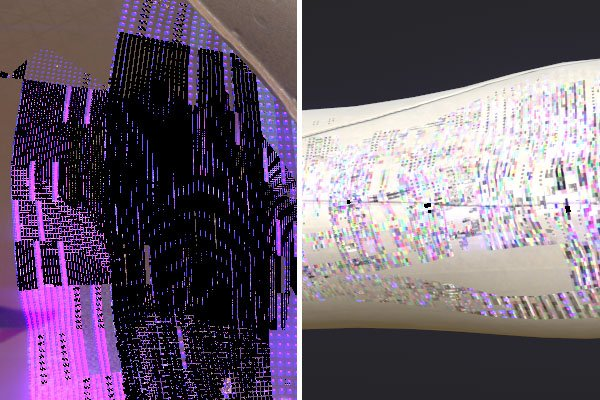
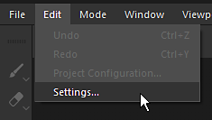
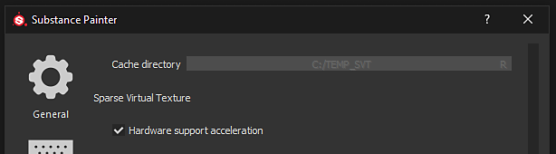
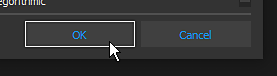
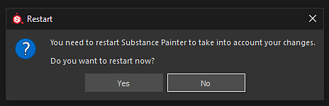

Starting with version 2018.3.0 the following kind of artifacts can appear in the viewport:

These artifacts are related to issues with Nvidia GPU Drivers.
To avoid the artifacts the Sparse Virtual Textures hardware support needs to be deactivated.
The GeForce Drivers 440.97 have now fixed this issue . We recommended to update to these drivers and to keep the SVT enabled to get good performances.
New drivers are available on Nvidia website: https://www.nvidia.com/Download/index.aspx

Open the main Settings via Edit > Settings.

Inside the "General" section, scroll down and find the sub-section named "Sparse Virtual Textures"
Disable the "Hardware support acceleration" setting by unchecking it.

Validate the change by clicking on the "OK" button.

Restart Substance 3D Painter by clicking on the "Yes" button to apply the change.